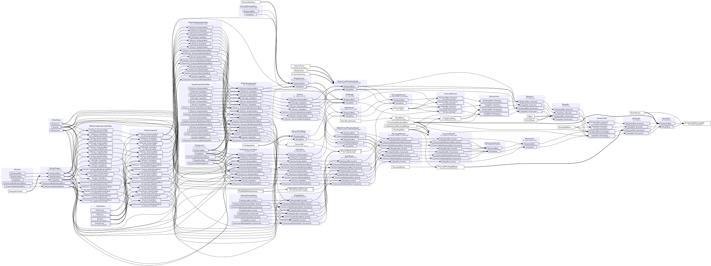
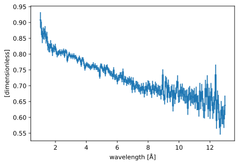
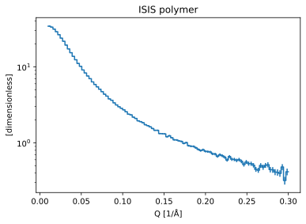
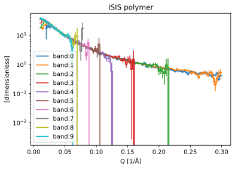
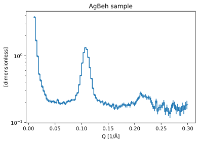
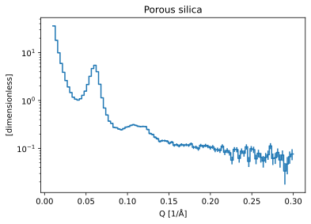
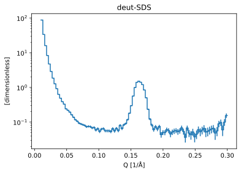

LoKI: data reduction from Larmor detector test#
This notebook shows how to use the LokiAtLarmorWorkflow to reduce data acquired during the 2022 LoKI detector test at Larmor.
We will set up a standard workflow that computes a one-dimensional \(I(Q)\) from the raw data, and reuse the workflow for 4 different samples:
[1]:
import scipp as sc
import plopp as pp
from ess import sans
from ess import loki
import ess.loki.data # noqa: F401
from ess.sans.types import *
Create and configure the workflow#
We begin by creating the Loki workflow object:
[2]:
workflow = loki.LokiAtLarmorWorkflow()
# Load masks from files
workflow = sans.with_pixel_mask_filenames(
workflow, masks=loki.data.loki_tutorial_mask_filenames()
)
# Set detector bank name: in this case there is only one bank
workflow[NeXusDetectorName] = "larmor_detector"
# Wavelength and Q binning parameters
workflow[WavelengthBins] = sc.linspace("wavelength", 1.0, 13.0, 201, unit="angstrom")
workflow[QBins] = sc.linspace(dim="Q", start=0.01, stop=0.3, num=101, unit="1/angstrom")
# Other parameters
workflow[CorrectForGravity] = True
workflow[UncertaintyBroadcastMode] = UncertaintyBroadcastMode.upper_bound
workflow[ReturnEvents] = False
File common to all runs#
We set files that are common to all sample runs, namely the background, empty beam and direct beam files:
[3]:
workflow[Filename[BackgroundRun]] = loki.data.loki_tutorial_background_run_60393()
workflow[Filename[TransmissionRun[BackgroundRun]]] = loki.data.loki_tutorial_run_60392()
workflow[Filename[EmptyBeamRun]] = loki.data.loki_tutorial_run_60392()
workflow[DirectBeamFilename] = loki.data.loki_tutorial_direct_beam_all_pixels()
Downloading file 'direct-beam-loki-all-pixels.h5' from 'https://public.esss.dk/groups/scipp/ess/loki/3/direct-beam-loki-all-pixels.h5' to '/home/runner/.cache/ess/loki'.
ISIS Polymer sample#
We configure the files to load
[4]:
workflow[Filename[SampleRun]] = loki.data.loki_tutorial_isis_polymer_sample_run()
workflow[Filename[TransmissionRun[SampleRun]]] = (
loki.data.loki_tutorial_isis_polymer_transmission_run()
)
Downloading file '60395-2022-02-28_2215.nxs' from 'https://public.esss.dk/groups/scipp/ess/loki/3/60395-2022-02-28_2215.nxs' to '/home/runner/.cache/ess/loki'.
Computing the beam center#
We use a center-of-mass approach to find the beam center:
[5]:
center = sans.beam_center_from_center_of_mass(workflow)
center
[5]:
scipp.Variable (336 Bytes)
- ()vector3m[-0.02864121 -0.01850989 4.11258332]
Values:
array([-0.02864121, -0.01850989, 4.11258332])
and set that value in our workflow
[6]:
workflow[BeamCenter] = center
Visualizing the workflow#
It is always a good idea to visualize the workflow graph, as a sanity check.
[7]:
workflow.visualize(BackgroundSubtractedIofQ, compact=True, graph_attr={"rankdir": "LR"})
[7]:

Intermediate result: transmission fraction#
[8]:
tf = workflow.compute(TransmissionFraction[SampleRun])
tf.plot()
[8]:

Compute I(Q)#
[9]:
da = workflow.compute(BackgroundSubtractedIofQ)
da.plot(norm="log", title="ISIS polymer")
[9]:

Wavelength bands#
[10]:
workflow[WavelengthBands] = sc.linspace("wavelength", 1.0, 13.0, 11, unit="angstrom")
da_bands = workflow.compute(BackgroundSubtractedIofQ)
da_bands
[10]:
scipp.DataArray (9.88 KB)
- band: 10
- Q: 100
- Q(Q [bin-edge])float641/Å0.01, 0.013, ..., 0.297, 0.3
Values:
array([0.01 , 0.0129, 0.0158, 0.0187, 0.0216, 0.0245, 0.0274, 0.0303, 0.0332, 0.0361, 0.039 , 0.0419, 0.0448, 0.0477, 0.0506, 0.0535, 0.0564, 0.0593, 0.0622, 0.0651, 0.068 , 0.0709, 0.0738, 0.0767, 0.0796, 0.0825, 0.0854, 0.0883, 0.0912, 0.0941, 0.097 , 0.0999, 0.1028, 0.1057, 0.1086, 0.1115, 0.1144, 0.1173, 0.1202, 0.1231, 0.126 , 0.1289, 0.1318, 0.1347, 0.1376, 0.1405, 0.1434, 0.1463, 0.1492, 0.1521, 0.155 , 0.1579, 0.1608, 0.1637, 0.1666, 0.1695, 0.1724, 0.1753, 0.1782, 0.1811, 0.184 , 0.1869, 0.1898, 0.1927, 0.1956, 0.1985, 0.2014, 0.2043, 0.2072, 0.2101, 0.213 , 0.2159, 0.2188, 0.2217, 0.2246, 0.2275, 0.2304, 0.2333, 0.2362, 0.2391, 0.242 , 0.2449, 0.2478, 0.2507, 0.2536, 0.2565, 0.2594, 0.2623, 0.2652, 0.2681, 0.271 , 0.2739, 0.2768, 0.2797, 0.2826, 0.2855, 0.2884, 0.2913, 0.2942, 0.2971, 0.3 ]) - wavelength(wavelength [bin-edge], band)float64Å1.0, 2.2, ..., 11.800, 13.0
Values:
array([[ 1. , 2.2, 3.4, 4.6, 5.8, 7. , 8.2, 9.4, 10.6, 11.8], [ 2.2, 3.4, 4.6, 5.8, 7. , 8.2, 9.4, 10.6, 11.8, 13. ]])
- (band, Q)float32𝟙nan, nan, ..., nan, nanσ = nan, nan, ..., nan, nan
Values:
array([[ nan, nan, nan, 17.33073 , 21.22958 , 18.759237 , 19.606556 , 18.393658 , 15.843838 , 15.172715 , 13.776271 , 12.430657 , 10.952371 , 9.575821 , 9.115545 , 8.546961 , 7.831182 , 7.1652985 , 6.2922974 , 5.6743493 , 5.400613 , 4.935057 , 4.654241 , 4.2770877 , 4.277777 , 3.5873513 , 3.6244195 , 3.6001785 , 3.2255173 , 2.9607508 , 2.8386385 , 2.7731783 , 2.2471333 , 2.1766956 , 2.356063 , 2.269681 , 1.9811469 , 1.9471017 , 1.857686 , 1.8608929 , 1.6524316 , 1.7140576 , 1.450289 , 1.6121984 , 1.5083845 , 1.5699053 , 1.3757813 , 1.4248453 , 1.2816547 , 1.2764422 , 1.2840197 , 1.1186063 , 1.1401426 , 1.1324377 , 1.0768738 , 1.0579582 , 0.9421128 , 1.1256821 , 0.8213458 , 0.95571554, 0.9478695 , 0.7896818 , 0.7946448 , 0.7646219 , 0.79343635, 0.79303026, 0.6849092 , 0.692005 , 0.7320207 , 0.7284866 , 0.6490663 , 0.6776349 , 0.6323403 , 0.6107359 , 0.5678705 , 0.6144648 , 0.5906976 , 0.5755532 , 0.5398323 , 0.5754395 , 0.525023 , 0.4556538 , 0.53957653, 0.56278694, 0.5263156 , 0.5223261 , 0.45293257, 0.4753399 , 0.5102624 , 0.47453374, 0.494729 , 0.52825093, 0.44751942, 0.4228252 , 0.39543065, 0.42079365, 0.42512408, 0.49971348, 0.30227548, 0.4080124 ], [ nan, 17.080856 , 21.393906 , 23.746784 , 24.827177 , 23.167162 , 21.89077 , 20.156693 , 17.477985 , 15.557836 , 14.0869665 , 12.625227 , 10.831016 , 10.200814 , 9.285798 , 8.322462 , 7.5914187 , 6.8989577 , 6.3207593 , 5.8661876 , 5.2871823 , 5.11252 , 4.7099977 , 4.4490547 , 4.1376057 , 3.8126304 , 3.6370702 , 3.3781004 , 3.1251018 , 2.9707572 , 2.8029547 , 2.6627426 , 2.6080437 , 2.4387276 , 2.360703 , 2.194442 , 2.1099534 , 1.9488436 , 1.9000906 , 1.866484 , 1.7271637 , 1.7039111 , 1.5994234 , 1.5297236 , 1.4609171 , 1.4344062 , 1.2889665 , 1.2986106 , 1.3309561 , 1.1921663 , 1.220246 , 1.1589292 , 1.0985521 , 1.0747961 , 1.0596936 , 1.0372893 , 0.98896843, 0.97662437, 0.9369166 , 0.8967333 , 0.88143164, 0.88346595, 0.8221925 , 0.7935901 , 0.81649673, 0.77162385, 0.79996634, 0.7878301 , 0.7114667 , 0.70414764, 0.67351866, 0.70960337, 0.7040089 , 0.6715846 , 0.6127806 , 0.69527817, 0.6245149 , 0.63073206, 0.633368 , 0.63154733, 0.6217649 , 0.5948253 , 0.59056884, 0.49028954, 0.5433322 , 0.48092592, 0.4387316 , 0.35320097, 0.49086657, 0.48944727, 0.5422226 , 0.468682 , 0.4330823 , 0.5305541 , 0.50555474, 0.33601812, 0.19133678, 0.32872242, 0.49270916, 0.5170332 ], [18.352688 , 23.891499 , 30.007236 , 29.879866 , 27.45103 , 24.350807 , 22.051147 , 19.407795 , 17.604277 , 15.284914 , 13.479119 , 12.612606 , 11.195129 , 10.241836 , 8.9875555 , 8.237958 , 7.535661 , 6.933026 , 6.3547454 , 5.748536 , 5.4764323 , 4.9034476 , 4.59019 , 4.2491693 , 4.0026793 , 3.757513 , 3.603931 , 3.340231 , 3.1389413 , 3.012693 , 2.82899 , 2.7690876 , 2.5449538 , 2.4049659 , 2.2847912 , 2.1666288 , 2.0774322 , 1.9521166 , 1.9111058 , 1.8121003 , 1.7731702 , 1.6202635 , 1.714534 , 1.5186602 , 1.453506 , 1.4951514 , 1.3866723 , 1.346517 , 1.2754242 , 1.1983097 , 1.289172 , 1.2344973 , 1.0530046 , 1.1353236 , 1.0586144 , 1.079373 , 1.0185906 , 1.0428712 , 0.99106276, 0.8072381 , 0.9609366 , 0.864716 , 0.99296266, 0.9898433 , 0.8907642 , 0.5817202 , 0.6623146 , 0.5557281 , 0.47527775, 0.9453356 , 0.79087627, 0. , nan, nan, nan, nan, nan, nan, nan, nan, nan, nan, nan, nan, nan, nan, nan, nan, nan, nan, nan, nan, nan, nan, nan, nan, nan, nan, nan, nan], [26.214663 , 34.128162 , 33.693756 , 29.707685 , 27.058796 , 24.094288 , 21.674784 , 19.200819 , 17.185144 , 15.344079 , 13.7030325 , 12.641649 , 11.006543 , 9.925899 , 9.010193 , 8.358134 , 7.480674 , 6.9340596 , 6.3210516 , 5.8387065 , 5.3764935 , 4.9958696 , 4.6312437 , 4.4185896 , 4.1380835 , 3.7577646 , 3.6651688 , 3.3512824 , 3.2142086 , 2.9906824 , 2.8965151 , 2.7143579 , 2.6049397 , 2.2677095 , 2.3804638 , 2.1425917 , 2.204415 , 1.978181 , 1.9261978 , 1.8062567 , 1.6693882 , 1.8658229 , 1.6278636 , 1.8803986 , 1.4535701 , 1.3365978 , 1.5672517 , 0.9862537 , 1.4751518 , 1.5219762 , 0.66644037, 1.4926025 , 0. , nan, nan, nan, nan, nan, nan, nan, nan, nan, nan, nan, nan, nan, nan, nan, nan, nan, nan, nan, nan, nan, nan, nan, nan, nan, nan, nan, nan, nan, nan, nan, nan, nan, nan, nan, nan, nan, nan, nan, nan, nan, nan, nan, nan, nan, nan, nan], [34.64481 , 36.087677 , 32.558685 , 30.6135 , 26.715248 , 24.307404 , 22.089216 , 19.367199 , 17.306992 , 15.6280155 , 13.804192 , 12.320535 , 11.27295 , 10.476484 , 9.2002125 , 8.472747 , 7.8141856 , 7.4571366 , 6.4804482 , 6.2072268 , 5.841395 , 5.567188 , 5.1026664 , 4.413732 , 4.2524405 , 3.9766405 , 3.6608021 , 3.2553647 , 3.137061 , 2.992128 , 3.2026079 , 2.8431325 , 2.6700687 , 2.49038 , 2.498615 , 1.9027253 , 1.5772562 , 1.5785815 , 1.6396358 , 0.5682092 , 0. , nan, nan, nan, nan, nan, nan, nan, nan, nan, nan, nan, nan, nan, nan, nan, nan, nan, nan, nan, nan, nan, nan, nan, nan, nan, nan, nan, nan, nan, nan, nan, nan, nan, nan, nan, nan, nan, nan, nan, nan, nan, nan, nan, nan, nan, nan, nan, nan, nan, nan, nan, nan, nan, nan, nan, nan, nan, nan, nan], [38.10364 , 34.790665 , 32.347095 , 28.452509 , 27.419125 , 23.485533 , 21.140419 , 18.98307 , 16.90902 , 15.202782 , 14.068089 , 11.939117 , 11.251274 , 10.204635 , 9.171263 , 8.226126 , 7.46916 , 6.6524644 , 6.403032 , 5.6965613 , 5.5005064 , 5.1332707 , 5.0293946 , 4.379981 , 4.2369742 , 3.9329236 , 3.7490964 , 3.6139896 , 3.503083 , 2.756085 , 3.5463967 , 2.6385014 , 4.9701047 , 0. , nan, nan, nan, nan, nan, nan, nan, nan, nan, nan, nan, nan, nan, nan, nan, nan, nan, nan, nan, nan, nan, nan, nan, nan, nan, nan, nan, nan, nan, nan, nan, nan, nan, nan, nan, nan, nan, nan, nan, nan, nan, nan, nan, nan, nan, nan, nan, nan, nan, nan, nan, nan, nan, nan, nan, nan, nan, nan, nan, nan, nan, nan, nan, nan, nan, nan], [37.711784 , 34.87301 , 29.27726 , 29.677658 , 25.124187 , 23.802166 , 21.42051 , 18.900661 , 16.692755 , 15.135437 , 13.422919 , 11.67332 , 11.224243 , 10.075849 , 8.94616 , 7.764982 , 7.4383354 , 6.9286203 , 5.754572 , 6.270034 , 5.643407 , 5.0477524 , 4.7294946 , 4.4720435 , 4.760675 , 1.9746791 , 5.635054 , 0. , nan, nan, nan, nan, nan, nan, nan, nan, nan, nan, nan, nan, nan, nan, nan, nan, nan, nan, nan, nan, nan, nan, nan, nan, nan, nan, nan, nan, nan, nan, nan, nan, nan, nan, nan, nan, nan, nan, nan, nan, nan, nan, nan, nan, nan, nan, nan, nan, nan, nan, nan, nan, nan, nan, nan, nan, nan, nan, nan, nan, nan, nan, nan, nan, nan, nan, nan, nan, nan, nan, nan, nan], [37.52753 , 34.228718 , 31.654161 , 28.322351 , 26.279984 , 24.44551 , 21.104223 , 18.886705 , 16.9402 , 15.137547 , 13.784859 , 12.383924 , 11.633734 , 10.329023 , 8.824441 , 8.469765 , 7.9532757 , 7.468796 , 7.01348 , 5.4526153 , 6.337018 , 5.6435575 , 2.7838428 , 17.061737 , nan, nan, nan, nan, nan, nan, nan, nan, nan, nan, nan, nan, nan, nan, nan, nan, nan, nan, nan, nan, nan, nan, nan, nan, nan, nan, nan, nan, nan, nan, nan, nan, nan, nan, nan, nan, nan, nan, nan, nan, nan, nan, nan, nan, nan, nan, nan, nan, nan, nan, nan, nan, nan, nan, nan, nan, nan, nan, nan, nan, nan, nan, nan, nan, nan, nan, nan, nan, nan, nan, nan, nan, nan, nan, nan, nan], [36.957783 , 33.67889 , 28.976227 , 28.356838 , 24.862339 , 24.004791 , 21.32266 , 18.55048 , 16.699003 , 15.813704 , 13.363457 , 11.176433 , 10.959348 , 10.276185 , 9.212644 , 9.182367 , 8.301752 , 6.5055394 , 4.631433 , 9.512543 , 8.735599 , nan, nan, nan, nan, nan, nan, nan, nan, nan, nan, nan, nan, nan, nan, nan, nan, nan, nan, nan, nan, nan, nan, nan, nan, nan, nan, nan, nan, nan, nan, nan, nan, nan, nan, nan, nan, nan, nan, nan, nan, nan, nan, nan, nan, nan, nan, nan, nan, nan, nan, nan, nan, nan, nan, nan, nan, nan, nan, nan, nan, nan, nan, nan, nan, nan, nan, nan, nan, nan, nan, nan, nan, nan, nan, nan, nan, nan, nan, nan], [37.36541 , 34.001728 , 32.51696 , 28.425264 , 26.696014 , 22.85719 , 21.944557 , 18.26361 , 17.313206 , 14.419689 , 13.947976 , 12.309884 , 10.547964 , 9.447043 , 9.55451 , 10.353554 , 7.6308913 , 4.18596 , 0. , nan, nan, nan, nan, nan, nan, nan, nan, nan, nan, nan, nan, nan, nan, nan, nan, nan, nan, nan, nan, nan, nan, nan, nan, nan, nan, nan, nan, nan, nan, nan, nan, nan, nan, nan, nan, nan, nan, nan, nan, nan, nan, nan, nan, nan, nan, nan, nan, nan, nan, nan, nan, nan, nan, nan, nan, nan, nan, nan, nan, nan, nan, nan, nan, nan, nan, nan, nan, nan, nan, nan, nan, nan, nan, nan, nan, nan, nan, nan, nan, nan]], dtype=float32)
Variances (σ²):
array([[ nan, nan, nan, 1.02355179e+02, 1.15481548e+01, 3.78083253e+00, 2.15655136e+00, 1.36406720e+00, 8.35149646e-01, 6.73671067e-01, 5.15163541e-01, 3.97144258e-01, 3.06686670e-01, 2.31592759e-01, 2.04890624e-01, 1.78571761e-01, 1.50499240e-01, 1.27837166e-01, 1.02303900e-01, 8.48728716e-02, 7.70538524e-02, 6.59323931e-02, 5.85256331e-02, 5.15199415e-02, 5.07953577e-02, 3.88774499e-02, 3.80434729e-02, 3.68277207e-02, 3.10290698e-02, 2.65384186e-02, 2.51390617e-02, 2.33418029e-02, 1.76019464e-02, 1.62043106e-02, 1.81108043e-02, 1.67211238e-02, 1.37254866e-02, 1.33479303e-02, 1.22215301e-02, 1.20802643e-02, 1.02794152e-02, 1.06495572e-02, 8.45295005e-03, 9.38485749e-03, 8.40296783e-03, 8.92842188e-03, 7.25316070e-03, 7.55806267e-03, 6.45033829e-03, 6.42879913e-03, 6.28582714e-03, 5.50709805e-03, 5.35090454e-03, 5.18337404e-03, 4.94908076e-03, 4.69977641e-03, 3.93922953e-03, 4.94798133e-03, 3.31130228e-03, 4.01445106e-03, 3.93184368e-03, 3.18049151e-03, 2.99936486e-03, 2.98593054e-03, 2.94531952e-03, 3.00013344e-03, 2.59928801e-03, 2.57328665e-03, 2.61384528e-03, 2.71953200e-03, 2.28950568e-03, 2.47617438e-03, 2.29428359e-03, 2.21777870e-03, 2.01793178e-03, 2.23614532e-03, 2.04963074e-03, 2.07109982e-03, 1.91864744e-03, 1.99068943e-03, 1.84785249e-03, 1.79964560e-03, 1.92284584e-03, 2.10057735e-03, 1.99813140e-03, 1.99011737e-03, 1.77709502e-03, 1.80806569e-03, 1.93377258e-03, 1.81071635e-03, 1.84854190e-03, 2.24846136e-03, 1.83255901e-03, 1.79699250e-03, 1.65044551e-03, 1.86257565e-03, 1.87281007e-03, 2.22930987e-03, 1.46980572e-03, 1.91732962e-03], [ nan, 4.28445673e+00, 9.63348925e-01, 5.39015591e-01, 3.97752374e-01, 2.86842316e-01, 2.35180229e-01, 1.96505651e-01, 1.49163395e-01, 1.18744403e-01, 9.80669558e-02, 7.95073509e-02, 5.99473529e-02, 5.31784818e-02, 4.46019545e-02, 3.62749435e-02, 3.05828098e-02, 2.56325547e-02, 2.17700414e-02, 1.89469401e-02, 1.58004668e-02, 1.47384340e-02, 1.26997642e-02, 1.13969138e-02, 9.95490514e-03, 8.62951856e-03, 7.89366942e-03, 6.93140225e-03, 6.03958638e-03, 5.55552356e-03, 4.96471720e-03, 4.53072181e-03, 4.36638808e-03, 3.89400916e-03, 3.62281594e-03, 3.20113148e-03, 2.98690447e-03, 2.60042795e-03, 2.50524632e-03, 2.40083481e-03, 2.12616404e-03, 2.06335075e-03, 1.86002359e-03, 1.72839209e-03, 1.61148945e-03, 1.56128057e-03, 1.33821392e-03, 1.34896778e-03, 1.40080217e-03, 1.19519013e-03, 1.25338812e-03, 1.16838911e-03, 1.10670936e-03, 1.07474590e-03, 1.06858253e-03, 1.05300965e-03, 1.00729428e-03, 1.00601849e-03, 9.80340410e-04, 9.58568184e-04, 9.65824001e-04, 9.69900400e-04, 9.40615253e-04, 9.33869102e-04, 9.84263374e-04, 9.98335425e-04, 1.06808916e-03, 1.10569107e-03, 1.04286463e-03, 1.10277464e-03, 1.09780894e-03, 1.24356907e-03, 1.30520610e-03, 1.30971719e-03, 1.30557735e-03, 1.53534871e-03, 1.53308560e-03, 1.66026456e-03, 1.83098146e-03, 1.88684079e-03, 2.07859161e-03, 2.17120466e-03, 2.28627212e-03, 2.15277495e-03, 2.63525406e-03, 2.64332653e-03, 2.69262912e-03, 2.55597802e-03, 3.87698924e-03, 4.54493379e-03, 5.06891822e-03, 5.00848889e-03, 5.00522880e-03, 7.53196701e-03, 9.04903375e-03, 7.79883005e-03, 5.32398419e-03, 9.12285876e-03, 1.87993329e-02, 2.10647583e-02], [1.87541091e+00, 6.51101470e-01, 5.86948514e-01, 5.06549716e-01, 4.21842635e-01, 3.31808537e-01, 2.71629184e-01, 2.11973101e-01, 1.74938440e-01, 1.33698851e-01, 1.04969732e-01, 9.18591693e-02, 7.32810348e-02, 6.18271604e-02, 4.82615903e-02, 4.09878790e-02, 3.47012952e-02, 2.96152160e-02, 2.51984056e-02, 2.09768210e-02, 1.90855805e-02, 1.56350005e-02, 1.37695735e-02, 1.19974036e-02, 1.07065374e-02, 9.56301950e-03, 8.81214533e-03, 7.68793467e-03, 6.87213801e-03, 6.40851818e-03, 5.69349295e-03, 5.51772397e-03, 4.78328252e-03, 4.38278029e-03, 4.05189209e-03, 3.77866556e-03, 3.59397940e-03, 3.34289484e-03, 3.26786912e-03, 3.08158062e-03, 3.06468946e-03, 2.73452001e-03, 3.08440858e-03, 2.71660555e-03, 2.70022289e-03, 2.93756556e-03, 2.83280108e-03, 2.92903068e-03, 2.97854492e-03, 2.93223071e-03, 3.58349038e-03, 3.73939611e-03, 3.40441568e-03, 4.14582435e-03, 4.43749409e-03, 5.25229285e-03, 5.79313142e-03, 7.02099875e-03, 8.10070056e-03, 7.85673410e-03, 1.14245322e-02, 1.23913866e-02, 1.92257259e-02, 2.36905292e-02, 2.96805464e-02, 2.49058269e-02, 4.09623347e-02, 5.23983650e-02, 7.61196986e-02, 3.02251726e-01, 6.30044758e-01, 0.00000000e+00, nan, nan, nan, nan, nan, nan, nan, nan, nan, nan, nan, nan, nan, nan, nan, nan, nan, nan, nan, nan, nan, nan, nan, nan, nan, nan, nan, nan], [9.15210903e-01, 9.42496419e-01, 8.71155858e-01, 6.73916698e-01, 5.54175556e-01, 4.41200584e-01, 3.55914086e-01, 2.80190617e-01, 2.26247266e-01, 1.81327164e-01, 1.45942152e-01, 1.24154426e-01, 9.54671055e-02, 7.85375759e-02, 6.50313348e-02, 5.63020669e-02, 4.56442200e-02, 3.96144576e-02, 3.33423354e-02, 2.85773743e-02, 2.45344061e-02, 2.13744268e-02, 1.85649898e-02, 1.69714186e-02, 1.51643734e-02, 1.28898760e-02, 1.24361161e-02, 1.08095231e-02, 1.02639152e-02, 9.31818783e-03, 9.05635674e-03, 8.50393064e-03, 8.14368390e-03, 7.03455601e-03, 8.00265744e-03, 7.49371247e-03, 8.48450605e-03, 8.06491449e-03, 8.98281205e-03, 9.48688388e-03, 1.00889103e-02, 1.45573374e-02, 1.56443268e-02, 2.39596944e-02, 2.37696040e-02, 3.23931947e-02, 5.30957207e-02, 4.99527715e-02, 1.33328810e-01, 2.47825697e-01, 4.40629423e-01, 2.24727392e+00, 0.00000000e+00, nan, nan, nan, nan, nan, nan, nan, nan, nan, nan, nan, nan, nan, nan, nan, nan, nan, nan, nan, nan, nan, nan, nan, nan, nan, nan, nan, nan, nan, nan, nan, nan, nan, nan, nan, nan, nan, nan, nan, nan, nan, nan, nan, nan, nan, nan, nan], [1.66135132e+00, 1.67352855e+00, 1.34157991e+00, 1.17355335e+00, 8.93078685e-01, 7.35560536e-01, 6.07868791e-01, 4.69577432e-01, 3.76638323e-01, 3.08275878e-01, 2.42624432e-01, 1.94475204e-01, 1.63218871e-01, 1.41816705e-01, 1.10424757e-01, 9.38693061e-02, 8.07840750e-02, 7.34948814e-02, 5.64644523e-02, 5.21341041e-02, 4.71495837e-02, 4.36101779e-02, 3.80297936e-02, 3.03792749e-02, 2.91669499e-02, 2.69615073e-02, 2.45615374e-02, 2.16045044e-02, 2.25319099e-02, 2.32179705e-02, 2.96839774e-02, 3.02357264e-02, 3.46049219e-02, 4.15767320e-02, 5.97010553e-02, 6.36648759e-02, 8.25074241e-02, 1.49036914e-01, 3.10363799e-01, 3.25030804e-01, 0.00000000e+00, nan, nan, nan, nan, nan, nan, nan, nan, nan, nan, nan, nan, nan, nan, nan, nan, nan, nan, nan, nan, nan, nan, nan, nan, nan, nan, nan, nan, nan, nan, nan, nan, nan, nan, nan, nan, nan, nan, nan, nan, nan, nan, nan, nan, nan, nan, nan, nan, nan, nan, nan, nan, nan, nan, nan, nan, nan, nan, nan], [3.19742417e+00, 2.60046864e+00, 2.21964216e+00, 1.70607865e+00, 1.56858456e+00, 1.15474427e+00, 9.37663496e-01, 7.56147087e-01, 6.03853405e-01, 4.89692688e-01, 4.18454170e-01, 3.05898279e-01, 2.71412224e-01, 2.24997550e-01, 1.83180466e-01, 1.48597866e-01, 1.25781000e-01, 1.02423772e-01, 9.71847400e-02, 8.07549879e-02, 7.84014612e-02, 7.22196400e-02, 7.34202117e-02, 6.39269501e-02, 6.83337525e-02, 7.51600116e-02, 8.66981745e-02, 1.15424857e-01, 1.61464363e-01, 2.06682459e-01, 5.07240534e-01, 9.17342126e-01, 8.54616261e+00, 0.00000000e+00, nan, nan, nan, nan, nan, nan, nan, nan, nan, nan, nan, nan, nan, nan, nan, nan, nan, nan, nan, nan, nan, nan, nan, nan, nan, nan, nan, nan, nan, nan, nan, nan, nan, nan, nan, nan, nan, nan, nan, nan, nan, nan, nan, nan, nan, nan, nan, nan, nan, nan, nan, nan, nan, nan, nan, nan, nan, nan, nan, nan, nan, nan, nan, nan, nan, nan], [5.07189226e+00, 4.23700714e+00, 2.98102593e+00, 3.00734186e+00, 2.16054606e+00, 1.92505956e+00, 1.55919349e+00, 1.21637535e+00, 9.55734909e-01, 7.87134767e-01, 6.21093154e-01, 4.75251108e-01, 4.37522411e-01, 3.58940035e-01, 2.89233208e-01, 2.27543265e-01, 2.14937761e-01, 1.96075886e-01, 1.47993684e-01, 1.85347885e-01, 1.74169004e-01, 1.76674649e-01, 2.04901353e-01, 2.77725697e-01, 5.08131742e-01, 3.80037397e-01, 3.49860811e+00, 0.00000000e+00, nan, nan, nan, nan, nan, nan, nan, nan, nan, nan, nan, nan, nan, nan, nan, nan, nan, nan, nan, nan, nan, nan, nan, nan, nan, nan, nan, nan, nan, nan, nan, nan, nan, nan, nan, nan, nan, nan, nan, nan, nan, nan, nan, nan, nan, nan, nan, nan, nan, nan, nan, nan, nan, nan, nan, nan, nan, nan, nan, nan, nan, nan, nan, nan, nan, nan, nan, nan, nan, nan, nan, nan], [7.85041571e+00, 6.40885448e+00, 5.39898634e+00, 4.32810879e+00, 3.68342280e+00, 3.16658473e+00, 2.36580396e+00, 1.89843118e+00, 1.53226614e+00, 1.23041880e+00, 1.02998829e+00, 8.36879730e-01, 7.52109230e-01, 6.11939311e-01, 4.73827869e-01, 4.51089472e-01, 4.27382290e-01, 4.33819890e-01, 4.67795461e-01, 4.29455876e-01, 7.98560917e-01, 1.35861588e+00, 2.10793805e+00, 1.04796112e+02, nan, nan, nan, nan, nan, nan, nan, nan, nan, nan, nan, nan, nan, nan, nan, nan, nan, nan, nan, nan, nan, nan, nan, nan, nan, nan, nan, nan, nan, nan, nan, nan, nan, nan, nan, nan, nan, nan, nan, nan, nan, nan, nan, nan, nan, nan, nan, nan, nan, nan, nan, nan, nan, nan, nan, nan, nan, nan, nan, nan, nan, nan, nan, nan, nan, nan, nan, nan, nan, nan, nan, nan, nan, nan, nan, nan], [1.16289339e+01, 9.42718220e+00, 6.96438360e+00, 6.60564375e+00, 5.04528332e+00, 4.67074394e+00, 3.68645096e+00, 2.82889009e+00, 2.26563001e+00, 2.03829050e+00, 1.49077940e+00, 1.08447230e+00, 1.07022429e+00, 9.86986041e-01, 8.64271700e-01, 9.70020056e-01, 1.03183448e+00, 1.04320979e+00, 1.30190158e+00, 9.05539417e+00, 7.91724014e+01, nan, nan, nan, nan, nan, nan, nan, nan, nan, nan, nan, nan, nan, nan, nan, nan, nan, nan, nan, nan, nan, nan, nan, nan, nan, nan, nan, nan, nan, nan, nan, nan, nan, nan, nan, nan, nan, nan, nan, nan, nan, nan, nan, nan, nan, nan, nan, nan, nan, nan, nan, nan, nan, nan, nan, nan, nan, nan, nan, nan, nan, nan, nan, nan, nan, nan, nan, nan, nan, nan, nan, nan, nan, nan, nan, nan, nan, nan, nan], [1.75066910e+01, 1.42463112e+01, 1.28418770e+01, 9.78141594e+00, 8.59563541e+00, 6.31201649e+00, 5.75610209e+00, 4.04440928e+00, 3.64062476e+00, 2.61634374e+00, 2.48245645e+00, 2.02371931e+00, 1.58839703e+00, 1.50280297e+00, 1.91623163e+00, 3.12686992e+00, 4.17321968e+00, 9.26512814e+00, 0.00000000e+00, nan, nan, nan, nan, nan, nan, nan, nan, nan, nan, nan, nan, nan, nan, nan, nan, nan, nan, nan, nan, nan, nan, nan, nan, nan, nan, nan, nan, nan, nan, nan, nan, nan, nan, nan, nan, nan, nan, nan, nan, nan, nan, nan, nan, nan, nan, nan, nan, nan, nan, nan, nan, nan, nan, nan, nan, nan, nan, nan, nan, nan, nan, nan, nan, nan, nan, nan, nan, nan, nan, nan, nan, nan, nan, nan, nan, nan, nan, nan, nan, nan]], dtype=float32)
[11]:
pp.plot(sc.collapse(da_bands, keep="Q"), norm="log", title="ISIS polymer")
[11]:

AgBeh sample#
[12]:
# Reset wavelength bands
workflow[WavelengthBands] = None
workflow[Filename[SampleRun]] = loki.data.loki_tutorial_agbeh_sample_run()
workflow[Filename[TransmissionRun[SampleRun]]] = (
loki.data.loki_tutorial_agbeh_transmission_run()
)
Downloading file '60387-2022-02-28_2215.nxs' from 'https://public.esss.dk/groups/scipp/ess/loki/3/60387-2022-02-28_2215.nxs' to '/home/runner/.cache/ess/loki'.
Downloading file '60386-2022-02-28_2215.nxs' from 'https://public.esss.dk/groups/scipp/ess/loki/3/60386-2022-02-28_2215.nxs' to '/home/runner/.cache/ess/loki'.
[13]:
# Beam center
workflow[BeamCenter] = sans.beam_center_from_center_of_mass(workflow)
[14]:
# I(Q)
da = workflow.compute(BackgroundSubtractedIofQ)
da.plot(norm="log", title="AgBeh sample")
[14]:

Porous Silica#
[15]:
workflow[Filename[SampleRun]] = loki.data.loki_tutorial_porous_silica_sample_run()
workflow[Filename[TransmissionRun[SampleRun]]] = (
loki.data.loki_tutorial_porous_silica_transmission_run()
)
# Beam center
workflow[BeamCenter] = sans.beam_center_from_center_of_mass(workflow)
# I(Q)
da = workflow.compute(BackgroundSubtractedIofQ)
da.plot(norm="log", title="Porous silica")
Downloading file '60385-2022-02-28_2215.nxs' from 'https://public.esss.dk/groups/scipp/ess/loki/3/60385-2022-02-28_2215.nxs' to '/home/runner/.cache/ess/loki'.
Downloading file '60384-2022-02-28_2215.nxs' from 'https://public.esss.dk/groups/scipp/ess/loki/3/60384-2022-02-28_2215.nxs' to '/home/runner/.cache/ess/loki'.
[15]:

Deut-SDS#
[16]:
workflow[Filename[SampleRun]] = loki.data.loki_tutorial_deut_sds_sample_run()
workflow[Filename[TransmissionRun[SampleRun]]] = (
loki.data.loki_tutorial_deut_sds_transmission_run()
)
# Beam center
workflow[BeamCenter] = sans.beam_center_from_center_of_mass(workflow)
# I(Q)
da = workflow.compute(BackgroundSubtractedIofQ)
da.plot(norm="log", title="deut-SDS")
Downloading file '60389-2022-02-28_2215.nxs' from 'https://public.esss.dk/groups/scipp/ess/loki/3/60389-2022-02-28_2215.nxs' to '/home/runner/.cache/ess/loki'.
Downloading file '60388-2022-02-28_2215.nxs' from 'https://public.esss.dk/groups/scipp/ess/loki/3/60388-2022-02-28_2215.nxs' to '/home/runner/.cache/ess/loki'.
[16]:
